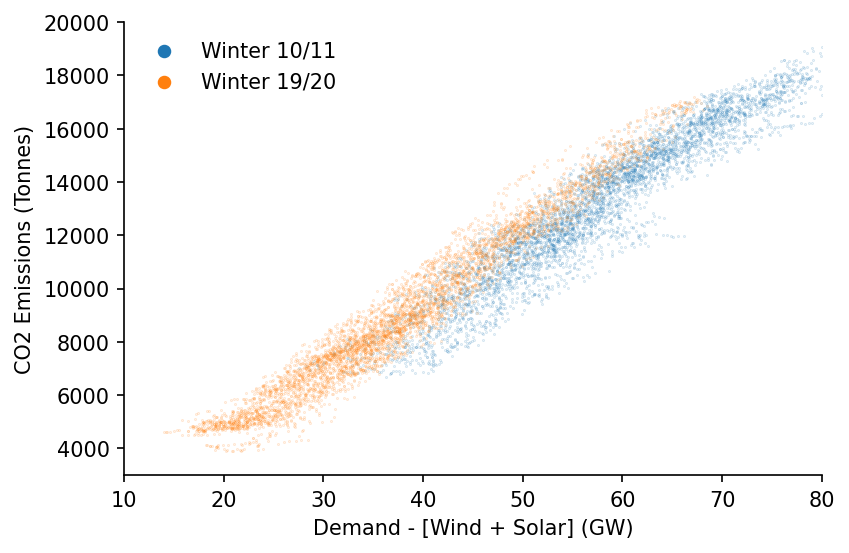
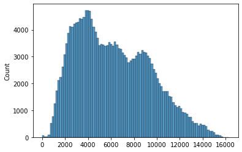
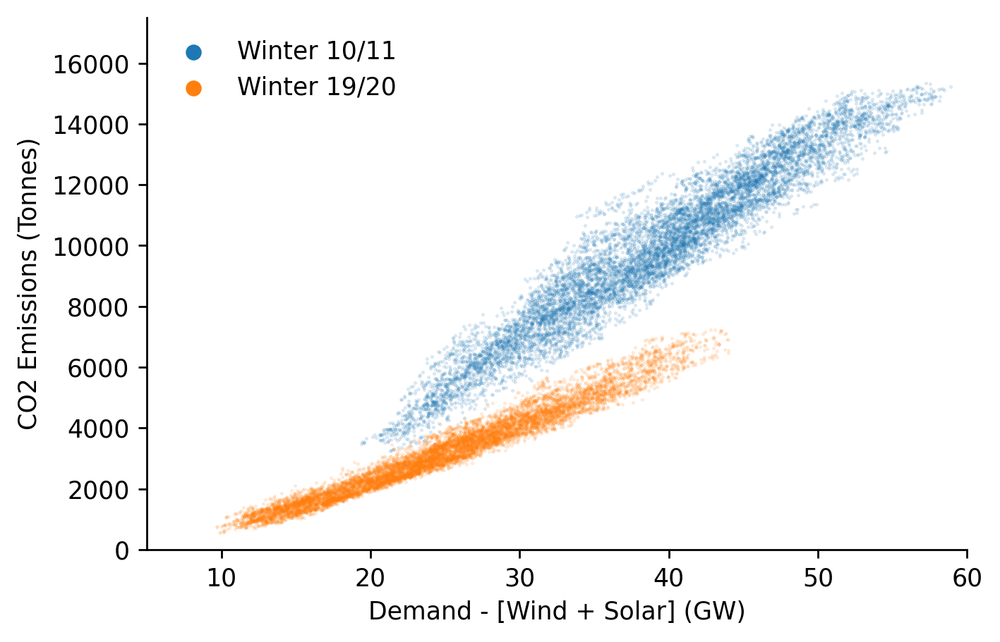
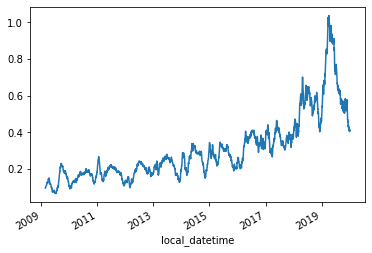
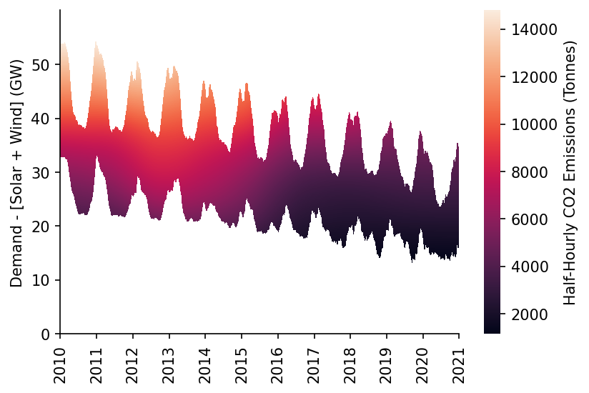
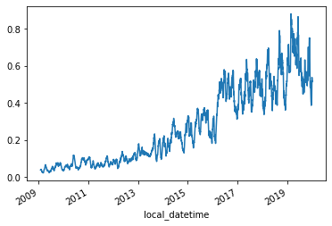
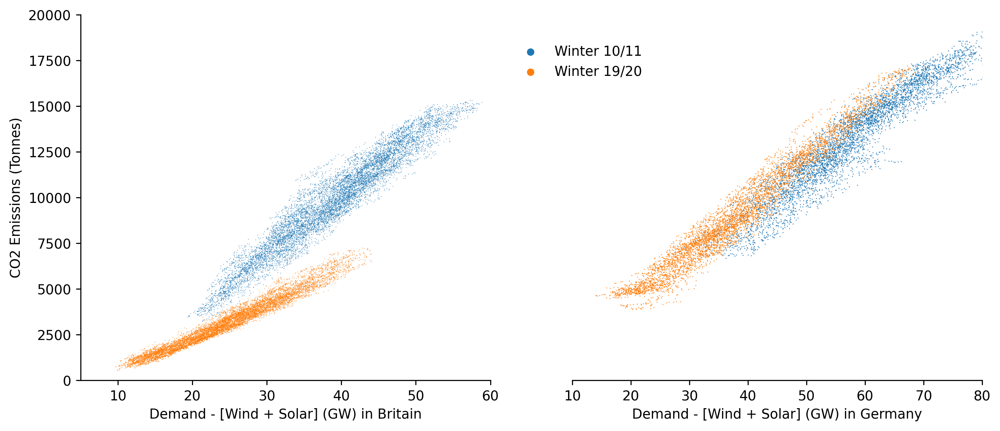

Carbon Merit Order Effect Analysis¶

This notebook outlines the analysis required to determine the carbon merit-order-effect of variable renewable generation in the GB and DE power markets.
Imports¶
import pandas as pd
import numpy as np
import seaborn as sns
import matplotlib.pyplot as plt
from moepy import surface, moe, eda
import pickle
from sklearn.metrics import r2_score
from moepy.surface import PicklableFunction
User Inputs¶
models_dir = '../data/models'
Germany¶
We'll start by loading in the data
df_fuels_DE = pd.read_csv('../data/raw/energy_charts.csv')
df_fuels_DE = df_fuels_DE.set_index('local_datetime')
df_fuels_DE.index = pd.to_datetime(df_fuels_DE.index, utc=True).tz_convert('Europe/Berlin')
df_fuels_DE.head()
| local_datetime | Biomass | Brown Coal | Gas | Hard Coal | Hydro Power | Oil | Others | Pumped Storage | Seasonal Storage | Solar | Uranium | Wind | net_balance |
|---|---|---|---|---|---|---|---|---|---|---|---|---|---|
| 2010-01-04 00:00:00+01:00 | 3.637 | 16.533 | 4.726 | 10.078 | 2.331 | 0 | 0 | 0.052 | 0.068 | 0 | 16.826 | 0.635 | -1.229 |
| 2010-01-04 01:00:00+01:00 | 3.637 | 16.544 | 4.856 | 8.816 | 2.293 | 0 | 0 | 0.038 | 0.003 | 0 | 16.841 | 0.528 | -1.593 |
| 2010-01-04 02:00:00+01:00 | 3.637 | 16.368 | 5.275 | 7.954 | 2.299 | 0 | 0 | 0.032 | 0 | 0 | 16.846 | 0.616 | -1.378 |
| 2010-01-04 03:00:00+01:00 | 3.637 | 15.837 | 5.354 | 7.681 | 2.299 | 0 | 0 | 0.027 | 0 | 0 | 16.699 | 0.63 | -1.624 |
| 2010-01-04 04:00:00+01:00 | 3.637 | 15.452 | 5.918 | 7.498 | 2.301 | 0.003 | 0 | 0.02 | 0 | 0 | 16.635 | 0.713 | -0.731 |
We now need to conver the fuel generation time-series into a carbon intensity time-series. We'll use data provided by volker-quaschning. The units are kgCO2 / kWh, equivalent to Tonnes/MWh.
N.b. We are looking at the fuel emissions (not avg over lifecycle incl. CAPEX)
DE_fuel_to_co2_intensity = {
'Biomass': 0.39,
'Brown Coal': 0.36,
'Gas': 0.23,
'Hard Coal': 0.34,
'Hydro Power': 0,
'Oil': 0.28,
'Others': 0,
'Pumped Storage': 0,
'Seasonal Storage': 0,
'Solar': 0,
'Uranium': 0,
'Wind': 0,
'net_balance': 0
}
s_DE_emissions_tonnes = (df_fuels_DE
.multiply(1e3) # converting to MWh
[DE_fuel_to_co2_intensity.keys()]
.multiply(DE_fuel_to_co2_intensity.values())
.sum(axis=1)
)
s_DE_emissions_tonnes = s_DE_emissions_tonnes[s_DE_emissions_tonnes>2000]
sns.histplot(s_DE_emissions_tonnes)
<AxesSubplot:ylabel='Count'>

We'll do a quick plot of the change over time
df_DE = pd.DataFrame({
'demand': df_fuels_DE.sum(axis=1),
'dispatchable': df_fuels_DE.drop(columns=['Solar', 'Wind']).sum(axis=1),
'emissions': s_DE_emissions_tonnes
}).dropna()
# Plotting
fig, ax = plt.subplots(dpi=150)
ax.scatter(df_DE.loc['2010-09':'2011-03', 'dispatchable'], df_DE.loc['2010-09':'2011-03', 'emissions'], s=0.1, alpha=0.25, label='Winter 10/11')
ax.scatter(df_DE.loc['2019-09':'2020-03', 'dispatchable'], df_DE.loc['2019-09':'2020-03', 'emissions'], s=0.1, alpha=0.25, label='Winter 19/20')
eda.hide_spines(ax)
ax.set_xlim(10, 80)
ax.set_ylim(3000, 20000)
ax.set_xlabel('Demand - [Wind + Solar] (GW)')
ax.set_ylabel('CO2 Emissions (Tonnes)')
lgnd = ax.legend(frameon=False) # Need to increase the legend marker size
lgnd.legendHandles[0]._sizes = [30]
lgnd.legendHandles[1]._sizes = [30]
for lh in lgnd.legendHandles:
lh.set_alpha(1)

Great Britain¶
We'll now do the same for the GB system
df_fuels_GB = pd.read_csv('../data/raw/electric_insights.csv')
df_fuels_GB = df_fuels_GB.set_index('local_datetime')
df_fuels_GB.index = pd.to_datetime(df_fuels_GB.index, utc=True).tz_convert('Europe/Berlin')
df_fuels_GB.head()
| local_datetime | day_ahead_price | SP | imbalance_price | valueSum | temperature | TCO2_per_h | gCO2_per_kWh | nuclear | biomass | coal | ... | demand | pumped_storage | wind_onshore | wind_offshore | belgian | dutch | french | ireland | northern_ireland | irish |
|---|---|---|---|---|---|---|---|---|---|---|---|---|---|---|---|---|---|---|---|---|---|
| 2009-01-01 01:00:00+01:00 | 58.05 | 1 | 74.74 | 74.74 | -0.6 | 21278 | 555 | 6.973 | 0 | 17.65 | ... | 38.329 | -0.404 | nan | nan | 0 | 0 | 1.977 | 0 | 0 | -0.161 |
| 2009-01-01 01:30:00+01:00 | 56.33 | 2 | 74.89 | 74.89 | -0.6 | 21442 | 558 | 6.968 | 0 | 17.77 | ... | 38.461 | -0.527 | nan | nan | 0 | 0 | 1.977 | 0 | 0 | -0.16 |
| 2009-01-01 02:00:00+01:00 | 52.98 | 3 | 76.41 | 76.41 | -0.6 | 21614 | 569 | 6.97 | 0 | 18.07 | ... | 37.986 | -1.018 | nan | nan | 0 | 0 | 1.977 | 0 | 0 | -0.16 |
| 2009-01-01 02:30:00+01:00 | 50.39 | 4 | 37.73 | 37.73 | -0.6 | 21320 | 578 | 6.969 | 0 | 18.022 | ... | 36.864 | -1.269 | nan | nan | 0 | 0 | 1.746 | 0 | 0 | -0.16 |
| 2009-01-01 03:00:00+01:00 | 48.7 | 5 | 59 | 59 | -0.6 | 21160 | 585 | 6.96 | 0 | 17.998 | ... | 36.18 | -1.566 | nan | nan | 0 | 0 | 1.73 | 0 | 0 | -0.16 |
We'll source the carbon intensity data from DUKES where possible and Electric Insights where it isn't.

GB_fuel_to_co2_intensity = {
'nuclear': 0,
'biomass': 0.121, # from EI
'coal': 0.921, # DUKES 2018 value
'gas': 0.377, # DUKES 2018 value (lower than many CCGT estimates, let alone OCGT)
'hydro': 0,
'pumped_storage': 0,
'solar': 0,
'wind': 0,
'belgian': 0.4,
'dutch': 0.474, # from EI
'french': 0.053, # from EI
'ireland': 0.458, # from EI
'northern_ireland': 0.458 # from EI
}
s_GB_emissions_tonnes = (df_fuels_GB
.multiply(1e3*0.5) # converting to MWh
[GB_fuel_to_co2_intensity.keys()]
.multiply(GB_fuel_to_co2_intensity.values())
.sum(axis=1)
)
sns.histplot(s_GB_emissions_tonnes)
<AxesSubplot:ylabel='Count'>

We'll do the same visualisation for GB of how the carbon intensity has changed over time.
Interestly we can see a clear fall in the carbon intensity of the GB dispatchable fleet, whereas with Germany the difference is negligible and if anything has slightly increased.
df_GB = pd.DataFrame({
'demand': df_fuels_GB[GB_fuel_to_co2_intensity.keys()].sum(axis=1),
'dispatchable': df_fuels_GB[GB_fuel_to_co2_intensity.keys()].drop(columns=['solar', 'wind']).sum(axis=1),
'emissions': s_GB_emissions_tonnes
}).dropna()
# Plotting
fig, ax = plt.subplots(dpi=250)
ax.scatter(df_GB.loc['2010-09':'2011-03', 'dispatchable'], df_GB.loc['2010-09':'2011-03', 'emissions'], s=0.1, alpha=0.25, label='Winter 10/11')
ax.scatter(df_GB.loc['2019-09':'2020-03', 'dispatchable'], df_GB.loc['2019-09':'2020-03', 'emissions'], s=0.1, alpha=0.25, label='Winter 19/20')
eda.hide_spines(ax)
ax.set_xlim(5, 60)
ax.set_ylim(0, 17500)
ax.set_xlabel('Demand - [Wind + Solar] (GW)')
ax.set_ylabel('CO2 Emissions (Tonnes)')
lgnd = ax.legend(frameon=False) # Need to increase the legend marker size
lgnd.legendHandles[0]._sizes = [30]
lgnd.legendHandles[1]._sizes = [30]
for lh in lgnd.legendHandles:
lh.set_alpha(1)

Model Fitting¶
We're ready to define and fit our models
model_definitions = {
'carbon_emissions_DE': {
'dt_idx': df_DE.index,
'x': df_DE['dispatchable'].values,
'y': df_DE['emissions'].values,
'reg_dates_start': '2010-01-04',
'reg_dates_end': '2021-01-01',
'reg_dates_freq': '13W',
'frac': 0.3,
'num_fits': 31,
'dates_smoothing_value': 26,
'dates_smoothing_units': 'W',
'fit_kwarg_sets': surface.get_fit_kwarg_sets(qs=[0.16, 0.5, 0.84])
},
'carbon_emissions_GB': {
'dt_idx': df_GB.index,
'x': df_GB['dispatchable'].values,
'y': df_GB['emissions'].values,
'reg_dates_start': '2010-01-04',
'reg_dates_end': '2021-01-01',
'reg_dates_freq': '13W',
'frac': 0.3,
'num_fits': 31,
'dates_smoothing_value': 26,
'dates_smoothing_units': 'W',
'fit_kwarg_sets': surface.get_fit_kwarg_sets(qs=[0.16, 0.5, 0.84])
}
}
surface.fit_models(model_definitions, models_dir)
German Model Evaluation & Carbon Savings Calculations¶
We'll start by loading in the model
%%time
DE_model_fp = '../data/models/carbon_emissions_DE_p50.pkl'
DE_smooth_dates = pickle.load(open(DE_model_fp, 'rb'))
DE_x_pred = np.linspace(-5, 91, 961)
DE_dt_pred = pd.date_range('2010-01-01', '2020-12-31', freq='D')
df_DE_pred = DE_smooth_dates.predict(x_pred=DE_x_pred, dt_pred=DE_dt_pred)
df_DE_pred.index = np.round(df_DE_pred.index, 1)
df_DE_pred.head()
Wall time: 3.22 s
| Unnamed: 0 | 2010-01-01 | 2010-01-02 | 2010-01-03 | 2010-01-04 | 2010-01-05 | 2010-01-06 | 2010-01-07 | 2010-01-08 | 2010-01-09 | 2010-01-10 | ... | 2020-12-22 | 2020-12-23 | 2020-12-24 | 2020-12-25 | 2020-12-26 | 2020-12-27 | 2020-12-28 | 2020-12-29 | 2020-12-30 | 2020-12-31 |
|---|---|---|---|---|---|---|---|---|---|---|---|---|---|---|---|---|---|---|---|---|---|
| -5 | 3886.65 | 3879.82 | 3873.02 | 3866.24 | 3859.49 | 3852.78 | 3846.09 | 3839.43 | 3832.81 | 3826.22 | ... | 90.9967 | 89.6073 | 88.2112 | 86.8081 | 85.3975 | 83.9787 | 82.5515 | 81.1158 | 79.6717 | 78.2193 |
| -4.9 | 3892.08 | 3885.26 | 3878.48 | 3871.72 | 3864.99 | 3858.3 | 3851.63 | 3844.99 | 3838.39 | 3831.82 | ... | 109.687 | 108.304 | 106.915 | 105.518 | 104.113 | 102.701 | 101.28 | 99.8512 | 98.4136 | 96.9678 |
| -4.8 | 3897.58 | 3890.78 | 3884.01 | 3877.28 | 3870.57 | 3863.89 | 3857.24 | 3850.62 | 3844.04 | 3837.48 | ... | 128.39 | 127.013 | 125.63 | 124.24 | 122.842 | 121.436 | 120.021 | 118.599 | 117.168 | 115.728 |
| -4.7 | 3903.14 | 3896.36 | 3889.62 | 3882.89 | 3876.2 | 3869.54 | 3862.91 | 3856.31 | 3849.75 | 3843.21 | ... | 147.105 | 145.734 | 144.357 | 142.973 | 141.581 | 140.182 | 138.774 | 137.358 | 135.933 | 134.501 |
| -4.6 | 3908.73 | 3901.97 | 3895.24 | 3888.54 | 3881.86 | 3875.22 | 3868.61 | 3862.03 | 3855.48 | 3848.96 | ... | 165.828 | 164.463 | 163.092 | 161.715 | 160.33 | 158.936 | 157.535 | 156.125 | 154.707 | 153.281 |
We'll then visualise the surface prediction as a heatmap
df_DE_dispatchable_lims = moe.construct_dispatchable_lims_df(df_DE['dispatchable'], rolling_w=6)
df_DE_pred_mask = moe.construct_pred_mask_df(df_DE_pred, df_DE_dispatchable_lims)
# Plotting
min_y = 10
max_y = 80
fig, ax = plt.subplots(dpi=150)
htmp = sns.heatmap(df_DE_pred[min_y:max_y].where(df_DE_pred_mask[min_y:max_y], np.nan).iloc[::-1], ax=ax, cbar_kws={'label': 'Hourly CO2 Emissions (Tonnes)'})
moe.set_ticks(ax, np.arange(min_y, max_y, 10), axis='y')
moe.set_date_ticks(ax, '2010-01-01', '2021-01-01', freq='1YS', date_format='%Y', axis='x')
for _, spine in htmp.spines.items():
spine.set_visible(True)
eda.hide_spines(ax)
ax.set_ylabel('Demand - [Solar + Wind] (GW)')
C:\Users\Ayrto\anaconda3\envs\MOE\lib\site-packages\sklearn\utils\validation.py:63: FutureWarning: Arrays of bytes/strings is being converted to decimal numbers if dtype='numeric'. This behavior is deprecated in 0.24 and will be removed in 1.1 (renaming of 0.26). Please convert your data to numeric values explicitly instead.
return f(*args, **kwargs)
Text(69.58333333333334, 0.5, 'Demand - [Solar + Wind] (GW)')

We'll calculate the model metrics
s_DE_pred_ts_dispatch, s_DE_pred_ts_demand = moe.get_model_pred_ts(df_DE['dispatchable'], DE_model_fp, s_demand=df_DE['demand'], x_pred=DE_x_pred, dt_pred=DE_dt_pred)
s_DE_err = s_DE_pred_ts_dispatch - df_DE.loc[s_DE_pred_ts_dispatch.index, 'emissions']
metrics = moe.calc_error_metrics(s_DE_err)
metrics
C:\Users\Ayrto\anaconda3\envs\MOE\lib\site-packages\pandas\core\indexes\base.py:5277: FutureWarning: Indexing a timezone-aware DatetimeIndex with a timezone-naive datetime is deprecated and will raise KeyError in a future version. Use a timezone-aware object instead.
start_slice, end_slice = self.slice_locs(start, end, step=step, kind=kind)
{'median_abs_err': 603.7669189236494,
'mean_abs_err': 750.7665511092414,
'root_mean_square_error': 967.8069705064318}
And \(r^{2}\) score
r2_score(df_DE.loc[s_DE_pred_ts_dispatch.index, 'emissions'], s_DE_pred_ts_dispatch)
0.9139682818721121
We're now ready to calculate the total savings
start_date = '2010'
end_date = '2020'
s_DE_MOE = s_DE_pred_ts_demand - s_DE_pred_ts_dispatch
s_DE_MOE = s_DE_MOE.dropna()
total_saving = s_DE_MOE[start_date:end_date].sum()
print(f"The total saving between {start_date} and {end_date} was {total_saving:,.0f} Tonnes")
The total saving between 2010 and 2020 was 318,923,308 Tonnes
And get some context for the average and total emissions over the same period
s_DE_emissions = df_DE['emissions'].loc[s_DE_MOE.index]
avg_DE_HH_emissions = s_DE_emissions.mean()
total_DE_emissions = s_DE_emissions[start_date:end_date].sum()
avg_DE_HH_emissions, total_DE_emissions
(11870.320551662837, 1141818004.185)
We'll calculate the average percentage emissions reduction due to the MOE
total_saving/(total_DE_emissions+total_saving)
0.21832976535024085
Finally we'll generate the MOE percentage time-series
s_DE_emissions_rolling = s_DE_emissions.rolling(48*28).mean().dropna()
s_DE_MOE_rolling = s_DE_MOE.rolling(48*28).mean().dropna()
s_DE_MOE_pct_reduction = s_DE_MOE_rolling/s_DE_emissions_rolling
s_DE_MOE_pct_reduction.plot()
<AxesSubplot:xlabel='local_datetime'>

British Model Evaluation & Carbon Savings Calculations¶
We'll start by loading in the model
%%time
start_date = '2010-01-01'
end_date = '2020-12-31'
GB_model_fp = '../data/models/carbon_emissions_GB_p50.pkl'
GB_smooth_dates = pickle.load(open(GB_model_fp, 'rb'))
GB_x_pred = np.linspace(-5, 91, 961)
GB_dt_pred = pd.date_range(start_date, end_date, freq='D')
df_GB_pred = GB_smooth_dates.predict(x_pred=GB_x_pred, dt_pred=GB_dt_pred)
df_GB_pred.index = np.round(df_GB_pred.index, 1)
df_GB_pred.head()
Wall time: 3.73 s
| Unnamed: 0 | 2010-01-01 | 2010-01-02 | 2010-01-03 | 2010-01-04 | 2010-01-05 | 2010-01-06 | 2010-01-07 | 2010-01-08 | 2010-01-09 | 2010-01-10 | ... | 2020-12-22 | 2020-12-23 | 2020-12-24 | 2020-12-25 | 2020-12-26 | 2020-12-27 | 2020-12-28 | 2020-12-29 | 2020-12-30 | 2020-12-31 |
|---|---|---|---|---|---|---|---|---|---|---|---|---|---|---|---|---|---|---|---|---|---|
| -5 | -3464.32 | -3464.5 | -3464.68 | -3464.85 | -3465.03 | -3465.2 | -3465.38 | -3465.55 | -3465.72 | -3465.89 | ... | -1132.67 | -1132.65 | -1132.62 | -1132.59 | -1132.57 | -1132.54 | -1132.52 | -1132.49 | -1132.46 | -1132.44 |
| -4.9 | -3440 | -3440.17 | -3440.33 | -3440.49 | -3440.66 | -3440.82 | -3440.98 | -3441.14 | -3441.29 | -3441.45 | ... | -1119.73 | -1119.7 | -1119.67 | -1119.65 | -1119.62 | -1119.6 | -1119.57 | -1119.55 | -1119.52 | -1119.49 |
| -4.8 | -3415.64 | -3415.79 | -3415.94 | -3416.1 | -3416.24 | -3416.39 | -3416.54 | -3416.68 | -3416.83 | -3416.97 | ... | -1106.78 | -1106.75 | -1106.73 | -1106.7 | -1106.68 | -1106.65 | -1106.63 | -1106.6 | -1106.57 | -1106.55 |
| -4.7 | -3391.24 | -3391.38 | -3391.52 | -3391.66 | -3391.79 | -3391.93 | -3392.06 | -3392.2 | -3392.33 | -3392.46 | ... | -1093.84 | -1093.81 | -1093.78 | -1093.76 | -1093.73 | -1093.71 | -1093.68 | -1093.66 | -1093.63 | -1093.6 |
| -4.6 | -3366.81 | -3366.93 | -3367.06 | -3367.18 | -3367.31 | -3367.43 | -3367.55 | -3367.67 | -3367.79 | -3367.91 | ... | -1080.89 | -1080.87 | -1080.84 | -1080.82 | -1080.79 | -1080.77 | -1080.74 | -1080.71 | -1080.69 | -1080.66 |
We'll then visualise the surface prediction as a heatmap
df_GB_dispatchable_lims = moe.construct_dispatchable_lims_df(df_GB.loc[start_date:end_date, 'dispatchable'], rolling_w=6)
df_GB_pred_mask = moe.construct_pred_mask_df(df_GB_pred, df_GB_dispatchable_lims)
# Plotting
min_y = 0
max_y = 60
fig, ax = plt.subplots(dpi=150)
htmp = sns.heatmap(df_GB_pred[min_y:max_y].where(df_GB_pred_mask[min_y:max_y], np.nan).iloc[::-1], ax=ax, cbar_kws={'label': 'Half-Hourly CO2 Emissions (Tonnes)'})
moe.set_ticks(ax, np.arange(min_y, max_y, 10), axis='y')
moe.set_date_ticks(ax, '2010-01-01', '2021-01-01', freq='1YS', date_format='%Y', axis='x')
for _, spine in htmp.spines.items():
spine.set_visible(True)
eda.hide_spines(ax)
ax.set_ylabel('Demand - [Solar + Wind] (GW)')
C:\Users\Ayrto\anaconda3\envs\MOE\lib\site-packages\sklearn\utils\validation.py:63: FutureWarning: Arrays of bytes/strings is being converted to decimal numbers if dtype='numeric'. This behavior is deprecated in 0.24 and will be removed in 1.1 (renaming of 0.26). Please convert your data to numeric values explicitly instead.
return f(*args, **kwargs)
Text(69.58333333333334, 0.5, 'Demand - [Solar + Wind] (GW)')

We'll calculate the model metrics
s_GB_pred_ts_dispatch, s_GB_pred_ts_demand = moe.get_model_pred_ts(df_GB['dispatchable'], GB_model_fp, s_demand=df_GB['demand'], x_pred=GB_x_pred, dt_pred=GB_dt_pred)
s_GB_err = s_GB_pred_ts_dispatch - df_GB.loc[s_GB_pred_ts_dispatch.index, 'emissions']
metrics = moe.calc_error_metrics(s_GB_err)
metrics
C:\Users\Ayrto\anaconda3\envs\MOE\lib\site-packages\pandas\core\indexes\base.py:5277: FutureWarning: Indexing a timezone-aware DatetimeIndex with a timezone-naive datetime is deprecated and will raise KeyError in a future version. Use a timezone-aware object instead.
start_slice, end_slice = self.slice_locs(start, end, step=step, kind=kind)
{'median_abs_err': 330.24369388573996,
'mean_abs_err': 476.21722650533655,
'root_mean_square_error': 661.7182203091455}
And \(r^{2}\) score
r2_score(df_GB.loc[s_GB_pred_ts_dispatch.index, 'emissions'], s_GB_pred_ts_dispatch)
0.9557674211115541
We're now ready to calculate the total savings
s_GB_MOE = s_GB_pred_ts_demand - s_GB_pred_ts_dispatch
s_GB_MOE = s_GB_MOE.dropna()
total_saving = s_GB_MOE[start_date:end_date].sum()
print(f"The total saving between {start_date} and {end_date} was {total_saving:,.0f} Tonnes")
The total saving between 2010-01-01 and 2020-12-31 was 221,069,470 Tonnes
And get some context for the average and total emissions over the same period
s_GB_emissions = df_GB['emissions'].loc[s_GB_MOE.index]
avg_GB_HH_emissions = s_GB_emissions.mean()
total_GB_emissions = s_GB_emissions[start_date:end_date].sum()
avg_GB_HH_emissions, total_GB_emissions
(6034.469929827791, 1160645808.423358)
We'll calculate the average percentage emissions reduction due to the MOE
total_saving/(total_GB_emissions+total_saving)
0.15999639957299291
Finally we'll generate the MOE percentage time-series
s_GB_emissions_rolling = s_GB_emissions.rolling(48*28).mean().dropna()
s_GB_MOE_rolling = s_GB_MOE.rolling(48*28).mean().dropna()
s_GB_MOE_pct_reduction = s_GB_MOE_rolling/s_GB_emissions_rolling
s_GB_MOE_pct_reduction.plot()
<AxesSubplot:xlabel='local_datetime'>

Plots¶
In this section we'll generate some of the plots needed for the paper, starting with the heatmap of the emissions surfaces
fig, axs = plt.subplots(dpi=150, ncols=2, figsize=(14, 5))
# GB
ax = axs[0]
min_y = 0
max_y = 60
htmp = sns.heatmap(df_GB_pred[min_y:max_y].where(df_GB_pred_mask[min_y:max_y], np.nan).iloc[::-1], ax=ax, cbar_kws={'label': 'Half-Hourly CO2 Emissions (Tonnes)'})
moe.set_ticks(ax, np.arange(min_y, max_y, 10), axis='y')
moe.set_date_ticks(ax, '2010-01-01', '2021-01-01', freq='1YS', date_format='%Y', axis='x')
for _, spine in htmp.spines.items():
spine.set_visible(True)
eda.hide_spines(ax)
ax.set_ylabel('Demand - [Solar + Wind] (GW)')
# DE
ax = axs[1]
min_y = 10
max_y = 80
htmp = sns.heatmap(df_DE_pred[min_y:max_y].where(df_DE_pred_mask[min_y:max_y], np.nan).iloc[::-1], ax=ax, cbar_kws={'label': 'Hourly CO2 Emissions (Tonnes)'})
moe.set_ticks(ax, np.arange(min_y, max_y, 10), axis='y')
moe.set_date_ticks(ax, '2010-01-01', '2021-01-01', freq='1YS', date_format='%Y', axis='x')
for _, spine in htmp.spines.items():
spine.set_visible(True)
eda.hide_spines(ax)
ax.set_ylabel('Demand - [Solar + Wind] (GW)')
fig.tight_layout()
C:\Users\Ayrto\anaconda3\envs\MOE\lib\site-packages\sklearn\utils\validation.py:63: FutureWarning: Arrays of bytes/strings is being converted to decimal numbers if dtype='numeric'. This behavior is deprecated in 0.24 and will be removed in 1.1 (renaming of 0.26). Please convert your data to numeric values explicitly instead.
return f(*args, **kwargs)
C:\Users\Ayrto\anaconda3\envs\MOE\lib\site-packages\sklearn\utils\validation.py:63: FutureWarning: Arrays of bytes/strings is being converted to decimal numbers if dtype='numeric'. This behavior is deprecated in 0.24 and will be removed in 1.1 (renaming of 0.26). Please convert your data to numeric values explicitly instead.
return f(*args, **kwargs)

We'll also plot the MOE time-series
fig, axs = plt.subplots(dpi=150, ncols=2, figsize=(14, 5))
# GB
ax = axs[0]
ax.scatter(s_GB_MOE.index, s_GB_MOE, s=0.01, alpha=0.2, color='k', label=None)
s_GB_MOE_rolling.plot(color='r', linewidth=1, ax=ax, label='28-Day Average')
eda.hide_spines(ax)
# ax.set_ylim(0, 40)
ax.set_xlim(pd.to_datetime('2010'), pd.to_datetime('2021'))
ax.set_xlabel('')
ax.set_ylabel('Merit Order Effect (Tonnes CO2)')
ax.legend(frameon=False)
# DE
ax = axs[1]
ax.scatter(s_DE_MOE.index, s_DE_MOE, s=0.05, alpha=0.2, color='k', label=None)
ax.plot(s_DE_MOE_rolling.index, s_DE_MOE_rolling, color='r', linewidth=1.5, label='28-Day Average')
eda.hide_spines(ax)
ax.set_xlim(pd.to_datetime('2010'), pd.to_datetime('2021'))
ax.set_xlabel('')
ax.set_ylabel('Merit Order Effect (Tonnes CO2)')
ax.legend(frameon=False)
<matplotlib.legend.Legend at 0x181ff7c1af0>

Finally we'll visualise the changing emissions from dispatchable generation between the two countries
fig, axs = plt.subplots(dpi=250, ncols=2, figsize=(12, 5))
# GB
ax = axs[0]
ax.scatter(df_GB.loc['2010-09':'2011-03', 'dispatchable'], df_GB.loc['2010-09':'2011-03', 'emissions'], s=0.25, linewidth=0, alpha=1, label='Winter 10/11')
ax.scatter(df_GB.loc['2019-09':'2020-03', 'dispatchable'], df_GB.loc['2019-09':'2020-03', 'emissions'], s=0.25, linewidth=0, alpha=1, label='Winter 19/20')
eda.hide_spines(ax)
ax.set_xlim(5, 60)
ax.set_xlabel('Demand - [Wind + Solar] (GW) in Britain')
ax.set_ylabel('CO2 Emissions (Tonnes)')
# DE
ax = axs[1]
ax.scatter(df_DE.loc['2010-09':'2011-03', 'dispatchable'], df_DE.loc['2010-09':'2011-03', 'emissions'], s=0.5, linewidth=0, alpha=1, label='Winter 10/11')
ax.scatter(df_DE.loc['2019-09':'2020-03', 'dispatchable'], df_DE.loc['2019-09':'2020-03', 'emissions'], s=0.5, linewidth=0, alpha=1, label='Winter 19/20')
eda.hide_spines(ax, positions=['top', 'left', 'right'])
ax.set_yticks([])
ax.set_xlim(10, 80)
ax.set_xlabel('Demand - [Wind + Solar] (GW) in Germany')
lgnd = ax.legend(frameon=False, bbox_to_anchor=(0.2, 0.95))
lgnd.legendHandles[0]._sizes = [30]
lgnd.legendHandles[1]._sizes = [30]
for lh in lgnd.legendHandles:
lh.set_alpha(1)
for ax in axs:
ax.set_ylim(0, 20000)

Saving Results¶
Additionaly we'll save the time-series predictions and model metrics, starting with the GB time-series
df_GB_results_ts = pd.DataFrame({
'prediction': s_GB_pred_ts_dispatch,
'counterfactual': s_GB_pred_ts_demand,
'observed': df_GB.loc[s_GB_pred_ts_dispatch.index, 'emissions'],
'moe': s_GB_MOE
})
df_GB_results_ts.head()
| local_datetime | prediction | counterfactual | observed | moe |
|---|---|---|---|---|
| 2010-01-01 01:00:00+01:00 | 8414.72 | 8861.95 | 7949.28 | 447.23 |
| 2010-01-01 01:30:00+01:00 | 8535.22 | 8986.13 | 8030.29 | 450.914 |
| 2010-01-01 02:00:00+01:00 | 8414.72 | 8820.73 | 7974.91 | 406.012 |
| 2010-01-01 02:30:00+01:00 | 7983.82 | 8454.75 | 7707.51 | 470.937 |
| 2010-01-01 03:00:00+01:00 | 7645.47 | 8060.81 | 7456.2 | 415.345 |
Which we'll save to csv
df_GB_results_ts.to_csv('../data/results/GB_carbon.csv')
Then the DE time-series
df_DE_results_ts = pd.DataFrame({
'prediction': s_DE_pred_ts_dispatch,
'counterfactual': s_DE_pred_ts_demand,
'observed': df_DE.loc[s_DE_pred_ts_dispatch.index, 'emissions'],
'moe': s_DE_MOE
})
df_DE_results_ts.to_csv('../data/results/DE_carbon.csv')
df_DE_results_ts.head()
| local_datetime | prediction | counterfactual | observed | moe |
|---|---|---|---|---|
| 2010-01-04 00:00:00+01:00 | 11981.6 | 12179 | 11883.8 | 197.359 |
| 2010-01-04 01:00:00+01:00 | 11518.7 | 11694.3 | 11488.6 | 175.594 |
| 2010-01-04 02:00:00+01:00 | 11400.5 | 11577.4 | 11228.5 | 176.903 |
| 2010-01-04 03:00:00+01:00 | 11071.5 | 11251.9 | 10962.7 | 180.385 |
| 2010-01-04 04:00:00+01:00 | 11311.5 | 11518.7 | 10892.5 | 207.187 |